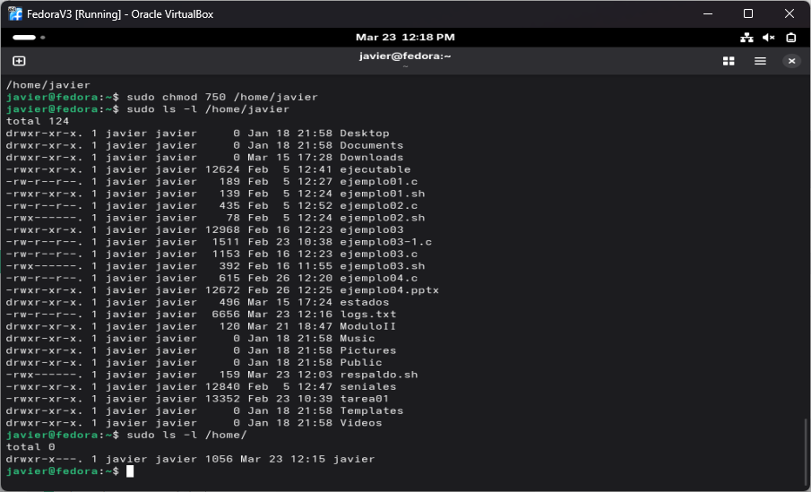
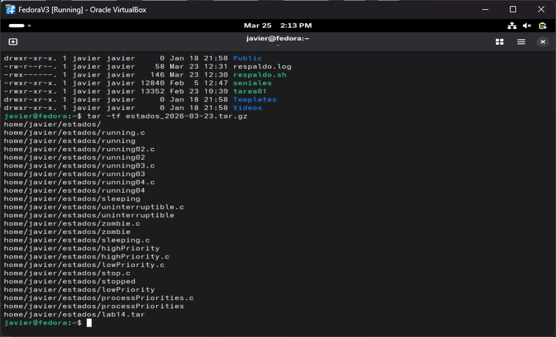
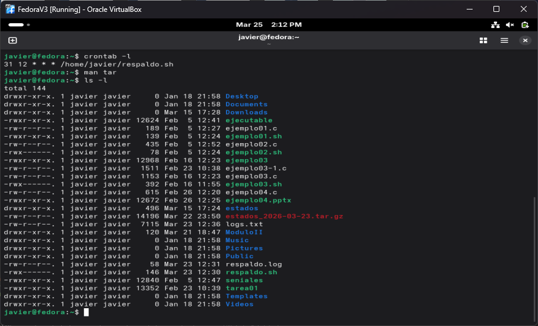

Laboratorio en clase #17: Procesos cron y creación de respaldos automáticos
1. Objetivos
Objetivo General
Utilizar los crons para crear un respaldo automático de una carpeta del sistema.
Objetivos Específicos
- Crear script sh que permita realizar.
- Crear cron que se ejecute el script cada cierto tiempo.
2. Investigación y Marco Conceptual
Archivos ZIP
Los archivos ZIP son un formato de compresión que permite agrupar uno o varios archivos en un solo fichero, reduciendo su tamaño para facilitar su almacenamiento y transferencia. Este tipo de archivo utiliza algoritmos de compresión sin pérdida, lo que significa que la información original se conserva intacta al descomprimirla. Dependiendo del tipo de archivo, la compresión puede reducir el tamaño entre un 10% y un 90%: por ejemplo, archivos de texto suelen comprimirse mucho, mientras que imágenes o videos ya comprimidos reducen menos. Gracias a su compatibilidad con múltiples sistemas operativos y herramientas, los archivos ZIP son ampliamente utilizados para compartir documentos, programas y datos de manera más eficiente. Además, pueden incluir opciones de seguridad como protección con contraseña, lo que los hace útiles para resguardar información.
En Windows, también es posible crear y descomprimir archivos ZIP utilizando la línea de comandos (CMD) mediante herramientas integradas como PowerShell. Para crear un archivo ZIP desde CMD, se puede ejecutar el comando powershell Compress-Archive -Path archivo.txt -DestinationPath archivo.zip, lo que permite comprimir uno o varios archivos. Para descomprimir, se utiliza powershell Expand-Archive -Path archivo.zip -DestinationPath carpeta_destino, extrayendo su contenido en la ubicación deseada.
En Linux, la creación y descompresión de archivos ZIP se realiza comúnmente desde la línea de comandos mediante las herramientas zip y unzip. El comando zip permite comprimir uno o varios archivos en un solo fichero, por ejemplo zip archivo.zip archivo.txt o zip -r archivo.zip carpeta/ para incluir directorios completos, mientras que unzip archivo.zip se utiliza para extraer su contenido.
Archivos TAR
Los archivos TAR y TAR.GZ son formatos ampliamente utilizados en sistemas Linux para el almacenamiento y compresión de datos. Un archivo TAR (Tape Archive) se encarga de agrupar múltiples archivos y directorios en un solo fichero sin aplicar compresión, facilitando su manejo y organización. Por otro lado, el formato TAR.GZ combina TAR con compresión mediante gzip, lo que permite reducir significativamente el tamaño del archivo. Dependiendo del tipo de contenido, la compresión en archivos TAR.GZ puede variar aproximadamente entre un 20% y un 80%, siendo más efectiva en archivos de texto y menos en archivos multimedia ya comprimidos. Esta combinación es muy utilizada para distribuir software y respaldos, ya que conserva la estructura original de los archivos mientras optimiza el espacio de almacenamiento y la transferencia de datos.
Tanto Windows como Linux existe un comando tar el cual permite comprimir y descomprimir.Este comando permite tanto empaquetar como comprimir archivos desde la línea de comandos. Por ejemplo, para crear un archivo comprimido se puede usar tar -czf archivo.tar.gz carpeta\, mientras que para extraer su contenido se utiliza tar -xzf archivo.tar.gz. Asimismo, si solo se desea agrupar archivos sin compresión, se puede usar tar -cvf archivo.tar carpeta\.
ZIP vs TAR
Los formatos ZIP y TAR son ampliamente utilizados para el manejo de archivos, pero tienen propósitos distintos en sistemas como Linux y Windows. El formato ZIP combina la función de empaquetado y compresión en un solo paso, lo que lo hace práctico y compatible con múltiples plataformas. En cambio, TAR (Tape Archive) se utiliza principalmente para agrupar archivos sin comprimirlos, aunque puede combinarse con herramientas de compresión como gzip (TAR.GZ) para reducir su tamaño. En general, ZIP es más común en entornos Windows por su facilidad de uso, mientras que TAR y TAR.GZ son preferidos en Linux por su flexibilidad y eficiencia en la gestión de archivos y respaldos.
3. Desarrollo Técnico
Paso 1. Script Bash que pemite realizar respaldos.
Primero se quiere crear una script que comprima un directorio con tar y escriba una en un archivo log la accion que realizo de esta manera existe la retrazabilidad.
tar -czf estados_$(date +\%F).tar.gz /home/javier/estados
echo "Respaldo realizado el dia $(date)" >> /home/javier/respaldo.log
Las banderas -czf significan:
- c: compime un en un archivo directorio
- z: utilza Gzip para hacer un doble cifrado
- f: para dar un archivo a coprimir
Para eso tambien se le añade la fecha al string del nombre y al final se declara el path al directorio a comprimir.
Para que este archivo pueda ser ejecutado por el sistema se debe cambiar los permisos y permitir que los crons lo puedan ejecutar. Esto se realiza mediante chmod 755 script.sh
Paso 2. Agregar un cron a crontab.
Ya que se creo el script a ejecutar se debe declara un cron que realice la tarea cada cierto tiempo, al igual que la anterior tarea se añade un cron con crontab -e , esta tarea se realizara cada dia a las 12:31.
31 12 * * * /home/javier/respaldo.sh
4. Evidencia de Ejecución



5. Conclusiones y Trabajo Futuro
En conclusión, el uso de procesos cron en Linux permite automatizar tareas de manera eficiente, como la generación de respaldos periódicos mediante scripts Bash. A través de este laboratorio se comprendió la importancia de combinar herramientas como tar para la compresión de archivos y cron para su ejecución programada, logrando así un sistema de respaldo automático sin intervención manual. Además, se reforzaron conceptos sobre permisos, manejo de scripts y diferencias entre formatos de compresión como ZIP y TAR, lo que contribuye a una mejor administración de la información y a la implementación de buenas prácticas en la gestión de sistemas.
Trabajo Futuro: Estudiar para el examen parcial
7. Bibliografía
Reporte generado con ayuda de ChatGPT